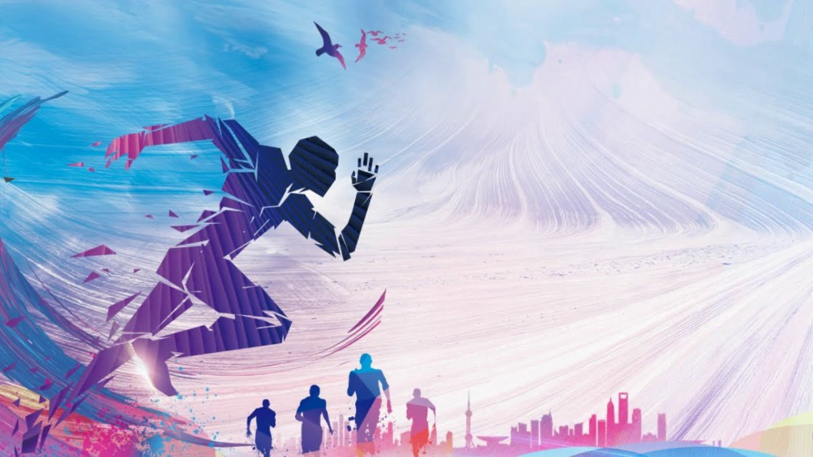

Doing sports improves immunity. This, in turn, protects the body from the flu and other diseases that attack us with changing temperatures and seasons. Thus, it can be argued that sport is a panacea for many diseases, which has no side effects and has a general positive effect on the body.
It has been proven that sport is an effective pain reliever. First of all, training helps the muscles to relax and strengthen the joints, which can relieve spasms of various types. In addition, physical activity contributes to the production of the natural hormone of happiness, which effectively combats pain of a different nature.